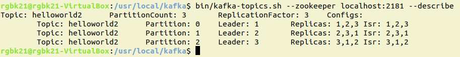

This page contains my personal notes from the Kafka in Action Textbook for easy reference.
Index:
Chapter 1: Introduction to Kafka
Chapter 2: Getting to know Kafka
Index:
Chapter 1: Introduction to Kafka
Chapter 2: Getting to know Kafka
Chapter 1: Introducing Kafka
- This Github project is a
working example to get you started with Kafka that has been adapted from
the
following link.
Chapter 2: Getting to know Kafka
- Working link to get started with running
Kafka
- In the VMBox, this is where Kafka is installed: /usr/local/kafka
- For the examples in the book, you will have to change the working directory to /usr/local/kafka
- Setting up the broker(Is that what this is called?)
- Creating a
- Creating
- You will have to look into the following things as well:
CountDownLatch: ??
ListenableFuture: SO Link - Comparison betn ListenableFuture and CompletableFuture
Serializer: org.apache.kafka.common.serialization
Kafka Template Javadocs
- In the VMBox, this is where Kafka is installed: /usr/local/kafka
- For the examples in the book, you will have to change the working directory to /usr/local/kafka
- Setting up the broker(Is that what this is called?)
Expand Gist 
topic:
Expand Gist
producer and consumer
Expand Gist
CountDownLatch: ??
ListenableFuture: SO Link - Comparison betn ListenableFuture and CompletableFuture
Serializer: org.apache.kafka.common.serialization
Kafka Template Javadocs
Hello World - Kafka
- Messages are how your data is represented in Kafka. You will also see references to messages as
records as those terms are often used interchangeably. Each message consists of a Key and a
Value.
- We will create a topic by running the
- The
- The
- The
- We will create a topic by running the
kafka-topics.sh command in a shell window with the
--create option. - The
partitions option is used to tell how many parts you want the topic to be split into.
For example, since we have three brokers, using three partitions will give us a partition per broker.
- The
replication-factor says that for each partition, we are attempting to have 3 replicas
of each one. This improves reliability and fault-tolerance. - The
zookeeper option is also pointed to our local instance of zookeeper which should have
been running before you started your brokers.

- The numbers you see under by the leader, replicas, and isr fields are the that we set
broker.id in our configuration files. A quick tour of Kafka
- The major components and their roles within the Kafka Architecture
| Component | Role |
|---|---|
| Producer | Sends message to Kafka |
| Consumer | Retrieves message from kafka |
| Topics | Logical name of where the messages are stored in the broker |
| ZooKeeper ensemble | Helps maintain consensus in the cluster |
| Broker | Handles the commit log |